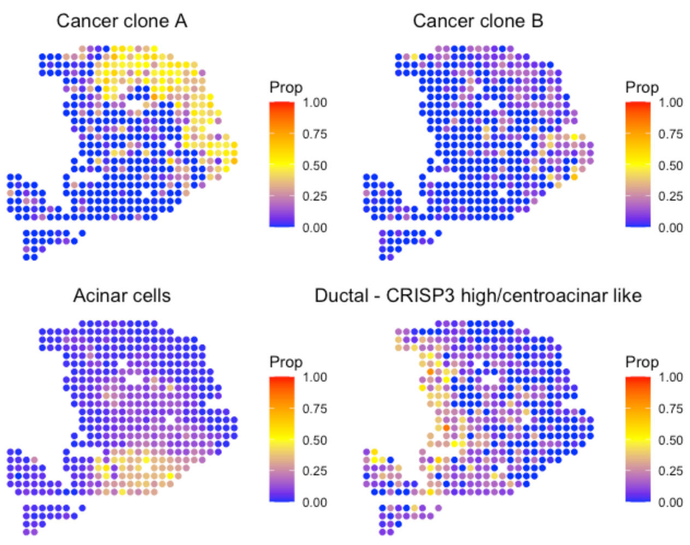
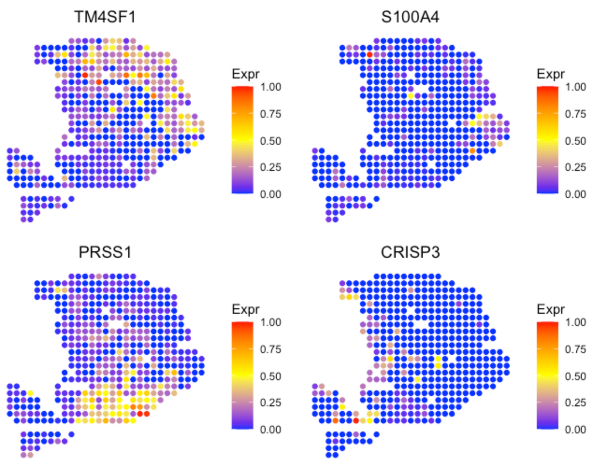
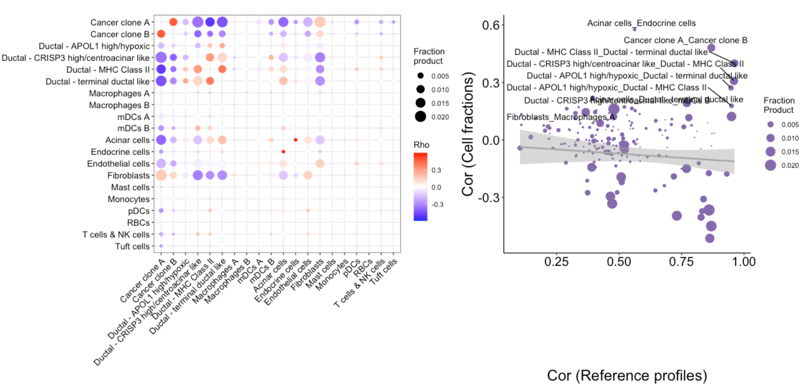

Since most tumor spatial transcriptomics (ST) data do not have matched scRNA-seq data from the same sample, SpaCE does not require malignant, stromal and immune cell reference. However, SpaCE can still accept a customized reference to carry out cell type deconvolution. This tutorial demonstrates how to run SpaCE with a matched scRNA-seq dataset by using a pancreatic ductal adenocarcinoma (PDAC) ST data set from Moncada et al, 2020.
Create SpaCE object
To create an SpaCE object, user need to prepare four types of input data referring to a tumor ST dataset.
- spatial transcriptomics count data. The spatial transcriptomics count data must be in the format of matrix with gene name (row) x spot ID (column).
- spatial location information. The spot coordinates should be in the format of matrix with spot ID (row) x coordinates (column). This 1st and 2nd columns represent X and Y coordinates, respectively.
- path to the H&E image file. The image path can be NA if unavailable.
- platform
library(SpaCE)
PDAC_Path <- system.file("extdata", 'oldST_PDAC', package = 'SpaCE')
load(paste0(PDAC_Path,"/st_PDAC.rda"))
# show count matrix
counts[1:6,1:5]
## 10x10 10x13 10x14 10x15 10x16
## A1CF 0 0 0 0 0
## A2M 13 0 4 0 0
## A4GALT 1 0 0 0 0
## A4GNT 0 0 1 0 0
## AAAS 0 0 0 0 0
## AACS 0 0 0 0 0
# show coordinate matrix
spotCoordinates[1:5,]
## X Y
## 10x10 10 10
## 10x13 10 13
## 10x14 10 14
## 10x15 10 15
## 10x16 10 16
# load ST data to create an SpaCE object.
SpaCE_obj <- create.SpaCE.object(
counts=counts,
spotCoordinates=spotCoordinates,
imageFile=NA,
platform = "oldST"
)
# show this object.
str(SpaCE_obj)Deconvolve cell lineage
We provide SpaCE.deconvolution.matched.scRNAseq to
deconvolve an SpaCE object with a customized scRNA-seq data. User need
to prepare three types of input data referring to the matched scRNA-seq
dataset.
- single cell RNA-seq (scRNA-seq) count data. The scRNA-seq count data must be in the format of matrix with gene name (row) x cell ID (column).
- cell annotation information. This matrix should include two columns, i,e., cellID and cellType. Each row represents a single cell.
- Hierarchical tree of cell types. This should be organized by using a list, and the name of each element are major lineages while the value of elements are the corresponding sublineages. If a major lineage does not have any sublineages, the value of this major lineage should be itself.
# load sc data
PDAC_Path <- system.file("extdata", 'oldST_PDAC', package = 'SpaCE')
load(paste0(PDAC_Path,"/sc_PDAC.rda"))
# show count matrix
sc_counts[1:6,1:5]
## c1 c2 c3 c4 c5
## A1BG 0 0 0 0 0
## A1CF 0 0 0 1 0
## A2M 0 0 0 0 0
## A2ML1 0 0 0 0 0
## A3GALT2 0 0 0 0 0
## A4GALT 0 0 0 0 0
# show cell annotation matrix
sc_annotation[1:6,]
## cellID bio_celltype
## c1 "c1" "Acinar cells"
## c2 "c2" "Ductal - terminal ductal like"
## c3 "c3" "Ductal - terminal ductal like"
## c4 "c4" "Ductal - CRISP3 high/centroacinar like"
## c5 "c5" "Cancer clone A"
## c6 "c6" "Cancer clone A"
# show cell type lineage tree
head(sc_lineageTree)
## $Cancer
## [1] "Cancer clone A" "Cancer clone B"
##
## $Ductal
## [1] "Ductal - APOL1 high/hypoxic" "Ductal - CRISP3 high/centroacinar like"
## [3] "Ductal - MHC Class II" "Ductal - terminal ductal like"
##
## $Macrophage
## [1] "Macrophages A" "Macrophages B"
##
## $mDC
## [1] "mDCs A" "mDCs B"
##
## $`Acinar cells`
## [1] "Acinar cells"
##
## $`Endocrine cells`
## [1] "Endocrine cells"Then, user can run SpaCE.deconvolution.matched.scRNAseq
to carry out cell type deconvolution.
SpaCE_obj <- SpaCE.deconvolution.matched.scRNAseq(
SpaCE_obj,
sc_counts=sc_counts,
sc_annotation=sc_annotation,
sc_lineageTree=sc_lineageTree,
coreNo=8
)
library(patchwork)
p1 <- SpaCE.visualize.deconvolution(SpaCE_obj, cellType="Cancer clone A")
p2 <- SpaCE.visualize.deconvolution(SpaCE_obj, cellType="Cancer clone B")
p3 <- SpaCE.visualize.deconvolution(SpaCE_obj, cellType="Acinar cells")
p4 <- SpaCE.visualize.deconvolution(SpaCE_obj, cellType="Ductal - CRISP3 high/centroacinar like")
(p1+p2) / (p3+p4)
User can use the following code to visualize the marker gene expression level and verify the cell type deconvolution.
p5 <- SpaCE.visualize.gene(SpaCE_obj,"TM4SF1") # marker for cancer cell state A
p6 <- SpaCE.visualize.gene(SpaCE_obj,"S100A4") # marker for cancer cell state B
p7 <- SpaCE.visualize.gene(SpaCE_obj,"PRSS1") # marker for acinar cell
p8 <- SpaCE.visualize.gene(SpaCE_obj,"CRISP3") # marker for centroacinar like ductal cell
(p5+p6) / (p7+p8)
Identify cell-cell interaction
After decomposing cell fractions, SpaCE can infer intercellular
interactions based on cell colocalization and ligand-receptor
coexpression. Linear correlations of cell fraction between cell types
are computed across all ST spots to evaluate cell-type colocalization.
High positive correlations indicate that cell-type pairs tend to
colocalize together. To infer physical interactions, SpaCE tests the
co-expression of ligand and receptor genes within the same ST spot for
the co-localized cell-type pairs. SpaCE provides
SpaCE.CCI.colocalization and
SpaCE.visualize.colocalization to compute and visualize the
co-localized cell-type pairs.
